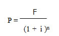
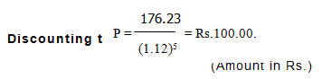

AECO241 :: Lecture 02 :: TIME VALUE OF MONEY

A farm manager has to take decisions over varying horizons of time. Two aspects of such decisions are important, i.e., i) differences in profitability growing out of time alone and ii) differences in the desirability of investments due to risk and uncertainty factors. Time has a very significant influence on costs and returns. There are many decisions where this time comparison principle finds application, such as: soil conservation programmes which bear fruits over a long time; putting land under an orchard which may not give returns for 5-10 years; and so on. Two aspects of the problem are considered under such situations: a) growth of a cash outlay over time and b) discounting of future income.
Growth of a Cash Outlay or Compounding Present Costs
The cash outlay grows over time due to the compounding of interest charges or opportunity costs involved in using the capital; if Rs.100 are put in a saving account with an annual interest at 12 per cent compounded, it will increase to Rs.125.44 by the end of second year. In symbolic terms, you now have the amount earned at the end of the first year. P + Pi, plus the interest that amount earned during the second year (P + Pi) i which could be expressed as: (P + Pi) + (P + Pi) i (or) P (1 + i) + Pi (1 + i) which after factorising (1 + i), results in
Compounding the Present Value
(Amount in Rs.)
Year |
Beginning Amount |
Interest Earned by the End of Year |
Beginning Amount + Interest |
1 |
100.00 |
100.00(0.12)=12.00 |
112.00 |
2 |
112.00 |
112.00(0.12)=13.44 |
125.44 |
3 |
125.44 |
125.44(0.12)=15.05 |
140.49 |
4 |
140.49 |
140.49(0.12)=16.86 |
157.35 |
5 |
157.35 |
157.35(0.12)=18.88 |
176.23 |
(P + Pi) (1 + i). Factorizing P from the left term gives: P (1 + i) (1 + i) = P (1 + i)2. In general, the compounded value, F (future value), of a present sum (P) invested at an annual interest rate (i) for ‘n’ years is given by F = P (1 + i)n .This procedure is called compounding.
Discounting Future Revenues
Costs incurred at one point of time cannot be compared with validity to revenues forthcoming at a later date. The future value of the present sum is estimated through: F = P(1 + i)n .Dividing both sides of this equation by (1 + i)n, the following equation is obtained:

Thus, if a pay-off, F, is due in ‘n’ years in future, its present value, P, can be determined using the above expression where ‘i’ is the interest rate. This procedure is known as discounting future returns. The present value of Rs.176.23 that could be at the end of 5 years if the appropriate discount rate is 12 per cent, is:
Discounting can be used to determine the present value of the future income stream earned by a durable input (asset).

Year |
Value at the End of the Year |
Present Value, if Discount Rate is 12 Per Cent per Annum (Rs) |
1 |
100 |
89.29 |
2 |
100 |
79.72 |
3 |
100 |
71.18 |
4 |
100 |
63.55 |
5 |
100 |
56.74 |
Total |
500 |
360.48 |
The interest rate used to discount or compound sums of money should be at least as large as the current or market rate of interest. How much higher it might be depends upon the manager’s opportunity costs. The important variables determining present and future values of a single payment or series of payments are: i) the number of years and ii) size of interest rate. Both factors interact to determine the total effects of discounting or compounding on present or future values.
| Download this lecture as PDF here |